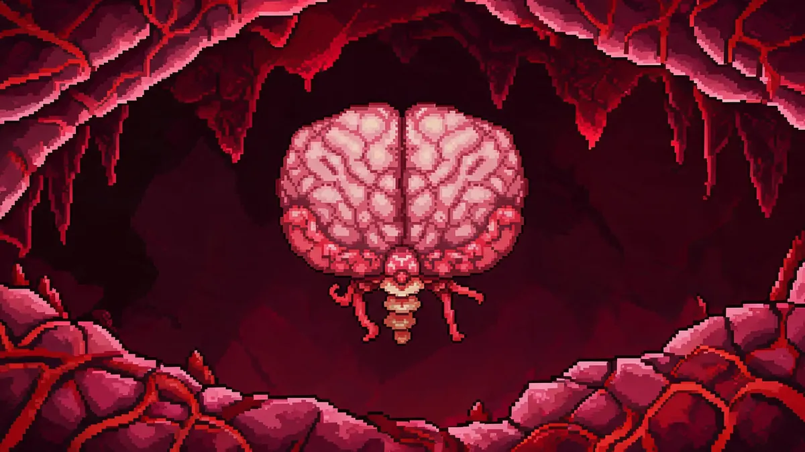

Brain of Cthulhu Guide —Crimson Nightmare

| Property | Details |
|---|---|
| HP | 1,250 (Brain) + 5-7 Creepers x 110 each / 2,250 + Creepers (Expert) |
| Damage | 30 (Normal) / 54 (Expert) / 81 (Master) |
| Defense | 14 (Brain) / 6 (Creepers) —Brain has 0 Defense once Creepers are killed |
| KB Resistance | 100% |
| Spawn | Break 3 Crimson Hearts in the Crimson, or use a Bloody Spine anywhere in the Crimson biome |
Crimson Only
The Brain only spawns in Crimson worlds. If your world has Corruption, you'll fight the Eater of Worlds instead. The Brain drops Crimtane Ore, which is the Crimson equivalent of Demonite.
Summoning
- Break 3 Crimson Hearts —Crimson Hearts are found in the Crimson chasms, encased in Crimstone. Use a hammer or purification powder to break through. The third heart spawns the Brain.
- Bloody Spine —Crafted from 15 Vertebrae + 5 Crimtane Ore at a Crimson Altar. Use it anywhere in the Crimson.
Recommended Gear
- Armor: Gold/Platinum. Crimson armor's life regen set bonus is excellent for extended fights.
- Weapons: A bow with Jester's Arrows is effective for the Creepers. The Space Gun with Meteor Armor shreds this fight. For melee, the Enchanted Boomerang or a broadsword for the second phase.
- Accessories: Hermes Boots, Shield of Cthulhu (if you have it), Band of Regeneration.
- Potions: Ironskin, Regeneration, Swiftness.
Arena Setup
Unlike the Eater of Worlds, the Brain teleports. A flat arena of about 60 blocks wide with 2 platform rows is enough. Clear out any Crimstone or uneven terrain. Place a Campfire in the center.
Strategy
Phase 1 —Creepers
The Brain is surrounded by 5-7 Creepers —small floating eyes that orbit around it. The Brain is invulnerable until all Creepers are dead:
- Focus all damage on the Creepers first. They have 110 HP each and orbit the Brain in a circular pattern.
- Piercing weapons are excellent here —a single Jester's Arrow can hit multiple Creepers.
- Don't worry about the Brain itself during this phase. It fires low-damage projectiles but isn't dangerous.
Phase 2 —The Brain
Once all Creepers are dead, the Brain becomes vulnerable. Its defense drops to 0 and it teleports around the arena, charging at you repeatedly:
- The Brain teleports directly above or beside you and charges. Move sideways as soon as you see the teleport flash.
- It will also create 2-3 illusion copies of itself. The real one is slightly brighter.
- Keep moving and fire in the direction the Brain teleports to. With 0 defense, it melts quickly.
- This phase is chaotic but short. The Brain has only 1,250 HP.
Expert Mode
In Expert, the Brain creates more Creepers and more illusion copies. The Illusion copies also deal damage on contact. Use a wide arena and keep moving. The Shield of Cthulhu dash is invaluable for dodging the teleport-charge pattern.
Rewards —What's Worth Your Time
- Crimtane Ore (40-80) —Worth farming. Used for Crimtane armor, tools, and the Blood Butcherer (the Crimson equivalent of Light's Bane, needed for the Night's Edge).
- Tissue Samples (30-50) —Worth farming. Required for all Crimtane-tier gear. One fight usually gives enough for a full armor set.
- Brain of Confusion (Expert) —Situational. Gives a chance to confuse attackers and a dodge chance. Less universally useful than the Worm Scarf from the Eater, but has niche applications.
Related Guides
- Night's Edge Guide —Crimtane is part of the chain
- Boss Progression Order
- Skeletron Guide —next boss after the Crimson